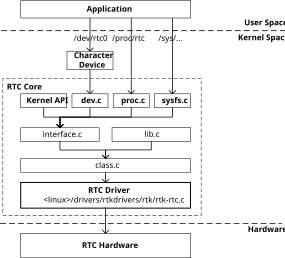
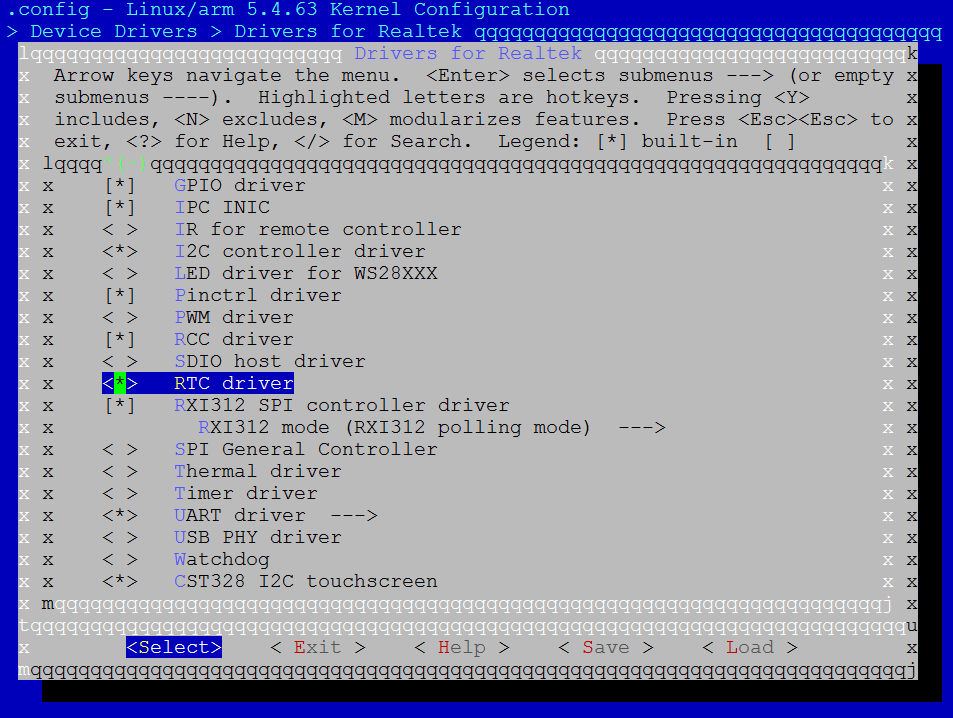

Introduction
The RTC driver is designed to support RTL8730E RTC module.
Architecture
The RTC driver follows Linux RTC subsystem. The RTC subsystem architecture is illustrated in figure below.
{kind=link}

RTC subsystem architecture
The RTC is used to track wall time. It still works when system is in low power mode.
The RTC device is a standard character device. User space application can access RTC device through functions such as open, release, read, write and IOCTL. Also, RTC core provide APIs so kernel program can access it.
The RTC core provides 3 user space interfaces: /dev/rtc0, /proc/rtc, /sys/class/rtc/rtc0.
Implementation
The RTC driver is implemented as following files:
Driver location |
Introduction |
|---|---|
|
RTC driver Kconfig |
|
RTC driver Makefile |
|
RTC driver code |
Configuration
DTS Configuration
The DTS node is defined in <dts>/rtl8730e-ocp.dtsi.
rtc: rtc@4200E000 {
compatible = "realtek,ameba-rtc";
reg = <0x4200E000 0x1000>;
interrupts = <GIC_SPI 12 IRQ_TYPE_LEVEL_HIGH>;
clocks = <&rcc RTK_CKE_RTC>;
};
The following is property description.
Property |
Description |
Configurable? |
|---|---|---|
compatible |
ID to match the driver and device |
No |
reg |
Register resource. |
No |
interrupts |
SPI interrupt |
No |
clocks |
RTC clock node |
No |
Build Configuration
Select Device Drivers > Drivers for Realtek > RTC driver:
{kind=link}

APIs
APIs for User Space
The RTC subsystem provides 3 userspace interfaces:
/dev/rtc0– RTC device./sys/class/rtc/rtc0– Sysfs attributes support readonly access to some RTC attributes./proc/driver/rtc– Procfs interface using for system clock RTC to expose itself.
User can access attributes to control RTC device via sysfs node. Below are some examples.
Command to get RTC date (year, month, day):
cat /sys/class/rtc/rtc0/date
Command to get RTC time (hour, minute, second):
cat /sys/class/rtc/rtc0/time
Refer to <sdk>/sources/kernel/<linux>/drivers/rtc/sysfs.c to get more information about sysfs interface.
Refer to RTC Drivers for Linux to get more information.
The RTC device acts as a character device. User can use open, read, ioctl, etc. to access RTC device. Refer to <test>/rtc for test demo.
APIs for Kernel Space
Interfaces |
Introduction |
|---|---|
rtc_class_open |
Open RTC device |
rtc_class_close |
Close RTC class |
rtc_read_time |
Get RTC time |
rtc_set_time |
Set RTC time |
rtc_set_ntp_time |
Save NTP synchronized time to the RTC |
rtc_read_alarm |
Get RTC alarm time |
rtc_set_alarm |
Set RTC alarm time |
rtc_irq_set_state |
enable/disable 2^N Hz periodic IRQs |
rtc_irq_set_freq |
set 2^N Hz periodic IRQ frequency for IRQ |
rtc_update_irq_enable |
enable/disable update IRQ |
rtc_alarm_irq_enable |
enable/disable alarm IRQ |
Examples:
Read wall time:
err = rtc_read_time(rtc, &tm);
Set wall time:
err = rtc_set_time(rtc, &tm);
Set alarm time:
err = rtc_set_alarm(rtc, &alrm);